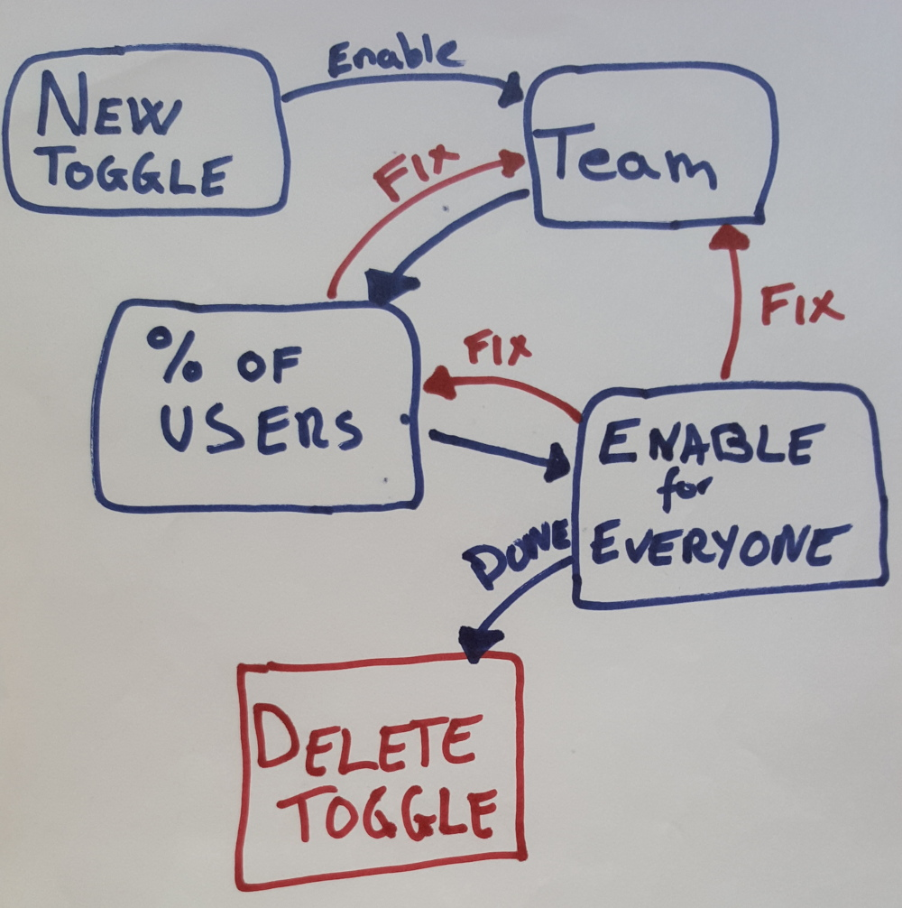
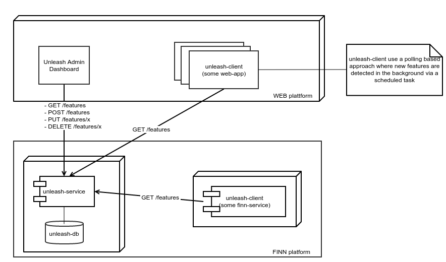
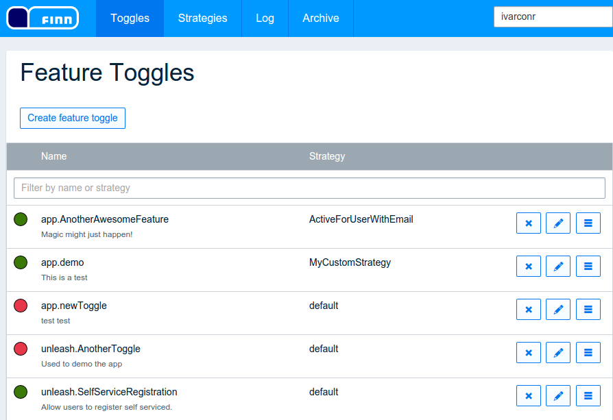

layout: true <div class="theme"> </div> --- class: center, middle, inverse # Unleash your features gradually #### Ivar Conradi Østhus <br /> Frontend developer & architect <br /> FINN.no <table class="bottom"> <tr> <td class="rightify"><img src="images/twitter.png" height="20" /></td> <td class="leftify strong">@ivarconr</td> </tr> <tr> <td class="rightify"></td> <td class="leftify strong">ico@finn.no</td> </tr> </table> ??? - My name => Ivar Østhus - I work as a developer and architect at FINN.no - - In this talk: - present feature toggles - how it allows us to release features gradually <table class="bottom"> <tr> <td class="rightify"><img src="images/twitter.png" height="20" /></td> <td class="leftify strong">@ivarconr</td> </tr> <tr> <td class="rightify"></td> <td class="leftify strong">ico@finn.no</td> </tr> </table> --- class: background-img # master-branch == highway to production <img src="images/highway.jpg"> .img-src[https://www.flickr.com/photos/ar88/4102692617/] .box[ - **~120 developers** - **~400 deployable** projects - **~850 artifacts** deployed weekly (prod) ] ??? - In FINN: - We are about 120 devs doing 850 releases a week. - master branch ==> highway to production. - Everything we check in to master: - Built - Unit tests executed - deployed to test-environments - Integration tests are executed - Can then deploy to production with a push of a button (We have a custom built pipeline system to manage all this.) --- class: middle, center, inverse # The master highway works well for <br /> small changes! ??? - The current setup - perfect for small changes - minor feature tweaks - bug-fixes --- # ...but not all changes are small - **Some features requires more effort** - days, weeks, months to be completed - multiple teams - multiple applications/services - **Unfinished features** - can not be exposed to end users! - can not block the master branch! ??? - **Some features requires more effort** - days, weeks, months - multiple teams, and applications involved - **Unfinished features** - can not be released to the users - should not block the master highway --- # Feature branches <img class="fullwitdh border" src="images/feature_branch_simple.jpg" /> ??? - The traditional way to isolate new code - Separate branch - for new features - Code will go to production before it's merged. - Delays the integration cost --- class: center, middle <img src="images/pull_request.png" style="width:50%;" /> ??? - Pull Request - **the best about branch and merge approach** - Great support in common tools: - GitHub - Stash --- # Concurrent branches <img class="fullwitdh border" src="images/feature_branch_double.jpg" /> ??? - What if we have multiple features? - Increased complexity - expensive to merge - Syncing master-fixes can reduce cost - Does features work together? --- class: background-img <img src="images/keep-refactoring-and-carry-on.png" /> ??? - Hard to refactor master - when multiple concurrent branches exists - framweworks and libraries - __let's refactor later!__ --- # Feature Branches - Summary **Pros:** - Safe to commit code in separate branch - No code will hit production before it is merged - High degree of code isolation - Code review via _pull-requests_ **Cons:** - The *merge itself* can be very hard and costly! - Difficult to share new code across branches - Fear of refactoring shared code (frameworks / libs) - How do we know that multiple features works well together? - Continuous integration, testing, demonstration difficult ??? Pros: - Simple and safe - No code to production before it's merged - Easy to test new stuff - The best: **Code review via pull requests** Cons: - Expensive to merge - Difficult to share new code across branches - **Fear of refactoring** - How do we know that features will work together? - Multiple dev-environments? --- class: background-img # Feature Toggles <img src="images/Merrydown_Cider Factory.jpg"> .img-src[https://www.flickr.com/photos/howzey/3805038515] ??? - **Feature Toggles is a simple technique** - work on new features directly on master - roll-out 'unfinished' code to production - hide unfinished functionality - **Separates deploy and release of new features** - Gives more control - when and how to roll-out features. - => Gradual roll-out of new features - Test new features early in production - Reducing risk associated with deployment - Fast roll-back --- class: middle .large[ ```java if(unleash.isEnabled("AwesomeFeature")) { //do some magic } else { //do old boring stuff } ``` ] ??? - Feature toggle => a simple IF-condition - Easy to get started - Start with a property file --- # Minimal impact! .large[ - Use as few **```if statements```** as possible - Protect the **entry point** (the link) for new UI-components - _New API's_ does not need protection - (existing clients does not know them anyway!) ] ??? - Use one ```if statement``` - only entry point (link) for new UI-components - No feature required toggle in many cases: - New API endpoint - Does not know the capability --- class: inverse, center, middle # Decoupling <br /> .red[**deployment**] of code <br /> and <br /> .green[**release**] of new features ??? - enables developers - deploy new versions of application continuously - independent of which features should be enabled - product owner - switch user from one version to the next - zero-downtime release. - fast rollback if required. --- # Selective release - Who should be exposed to a new feature? - Test things on early users and react to their responses - Detect problems before they get big ### ⇨ Gradual roll-out of features ??? - Feature toggles - a tool => selective release of features - only release feature to a small subset of users. - Detect problems before they grow big! --- class: inverse, middle # Activation strategies - Allows us to do selective release of our features ??? Feature toggles combined with activation strategies ⇨ this is where the fun begins! - allows us to decide who we want to enable a new feature for! - Allows us to unleash our new features gradually --- # Activation strategies .large[ Rules that decides when a _feature toggle_ is active - basic on/off - user - role / permission - date - server-node ] ** ⇨ Gradual roll-out of new features** ??? - rules that decides when a toggle is active. - Many different kinds: - user => only for me and my teamates - roles => E.g. Beta users - server-node => Test feature with full load, but only on one server, --- # Increased control .large[ - Allows us to **test** the new feature on a limited group - **Verify** that the new feature solves real user problems - Lightning fast **rollback** if problems are detected - **Iterate** the new feature to make it better ] ??? **Increased controll** - Test on a small group - safer to push code! - verify feature, before exposing it to **everyone** - Fast and simple roll-back: - discover errors - not performing - **Iterate until we are done!** --- class: inverse, center, middle # development ≠ production ??? - development env != production env - test with real users and real data - e.g: **Is the firewall really open???** --- class: background-img # Clean up your mess! .img-src[https://www.flickr.com/photos/epsos/5444678656/] .box[ - Feature toggles are technical debt! - Review your toggles often - Avoid permanent toggles (if you can) ] ??? - Technical debt from the moment it is created - a new if-statement - a new path in the application - Review flags often - Delete feature toggles - when it is not needed anymore - costly to maintain over team - Avoid permanent 'feature toggles' when possible - harder to reason about app --- class: background-img # No silver bullet! .box[ - How to test? - Bugs might be hidden for you - You see something else than your users - Harder to reason about the code ] .img-src[https://www.flickr.com/photos/eschipul/4160817135] ??? - **How to test?** - Every toggle represent a new path in your application - **Do not test all possbible combination** - same configuration as in production! - **You see something else!!?** - You have a toggle ON - Everyone else have it off - You see something else! --- # Avoid feature toggles if you can! .blockquote[Release toggles are a useful technique and lots of teams use them. However they should be your last choice when you're dealing with putting features into production. <br /> <br /> Your first choice should be to break the feature down so you can safely introduce parts of the feature into the product. The advantages of doing this are the same ones as any strategy based on small, frequent releases. You reduce the risk of things going wrong and you get valuable feedback on how users actually use the feature that will improve the enhancements you make later. ] _- Martin Fowler_ ??? - Martin Fowler: - Split up features first, - only use feature toggles if necessary. - A new feature is a risk until it is **in use by real users.** - Should **not** be an excuse to delay releases, - Should be a reason to release stuff more often! <!--- class: center # Life-cycle of a feature toggle  This life-cycle by just changing the activation strategy. 1. Start working on a new feature (disabled in production) 2. Enable the new feature for the team 3. Enable the feature to a percentage of the users 4. Enable the feature for everyone 5. **Delete the feature toggle.** when you are done with it --> --- # Unleash .large[ - Feature toggles framework - Developed by FINN.no - All our _feature toggles_ in the same dashboard - A shared and robust client - KISS! - Multi-platform - Implementations for Java and Node - **It's open source and written in NodeJs!** - https://github.com/finn-no/unleash ] ??? - Unlesh ==> a feature toggle framework developed by FINN.no - We started out with multiple simple toggle systems in FINN - Configuration files, database-tables etc. - Feature toggling - Fairly general problem - all toggles in one system - Make it simple for developers to take advantage of feature toggles. - Right now we have __40__ toggles in FINN platform. --- # Unleash :: System overview  ??? **Three parts:** 1. Unleash Service - A simple micro-service 2. Unleash Admin - Dashboard for create and update feature toggles 3. Unleash Clients - Client-library for using feature toggling in the applications. --- # Unleash :: The Service - A samll CRUD service written in NodeJs. - Technologies: - express - knex - react (the admin GUI) --- # Unleash :: The Admin Panel - Define new feature toggles - Enable / disable feature toggles - Activation strategies - History-log .right[  ] ??? **Used to:** - Create new toggles - Enable / disable toggles - Configure toggles - with an activation strategy - history log --- # Unleash :: The Client - The robust client - Local in-memory representation - Local persisted last-known representation - Poll-based updates via REST - Multiple implementations: - Java Client - https://github.com/finn-no/unleash-client-java - Node Client - https://github.com/finn-no/unleash-client-node ??? - The robust, and kind of **fat**, client - Holds a local in-memory representation of all toggles - Done this to make it super-fast and independent of the server - Shold work even if the unleash-server goes down. --- class: center, middle, inverse # Unleash is open source Feel free to use it, contribute and suggest improvements! #### https://github.com/finn-no/unleash --- ## Feature toggles - Summary #### Pros - No merge problems - Decoupling deployment of code and release of features - Safer to refactor code on master branch - Lightning fast rollback if problems are detected - Selective release via activation strategies - Iterate and improve new features - Test new features in production #### Cons - Feature toggles are technical debt - Accidental exposure of unfinished features - can be a security risk - Testing becomes harder - Long lived toggles are very costly! ??? - **Feature toggles** - Makes merge problems go away - Allows us to deploy code more often - and reduses the deployment-risk - test new features ealry in production - Easier to refactor the code - **Be careful** - Foggles are nasty form of techniqual debt - Each toggle is a new path in out application - Makes it harder to test - Accidental exposure of unfinished features --- # You should still use branches! .large[ - But not for complete features! - They should be short lived. - Use pull requests and the review process ] ??? - We should use branches - Short lived => max a few days work - not implement a full user story // feature - Use pull-requests to merge (code review) --- class: inverse, center, middle # use feature toggles to .red[reduce risk] # and # .green[unleash your features gradually] <br /<br /> #### (remember to clean up your mess!) <!-- # Future plans - Clean up code - the api (express, node) - the frontend (react) - Allow a feature toggle to have multiple activations strategies - Security - Authentication and authorization --> --- class: middle inverse # FINN.no is hiring! - Kick ass frontend developers! - Kick ass backend developers! - Kick ass developers! ### http://www.finn.no/apply-here ** Resources: ** .small[ - https://github.com/finn-no/unleash - https://github.com/ivarconr/feature-toggles-presentation - http://martinfowler.com/bliki/FeatureToggle.html - http://swreflections.blogspot.no/2014/08/feature-toggles-are-one-of-worst-kinds.html - http://technologyconversations.com/2014/08/26/feature-toggles-feature-switches-or-feature-flags-vs-feature-branches/ - http://abhishek-tiwari.com/post/decoupling-deployment-and-release-feature-toggles - http://www.slideshare.net/jug-berlin-brandenburg/feature-toggles-on-steroids ] <table class="bottom"> <tr> <td class="rightify"><img src="images/twitter.png" height="20" /></td> <td class="leftify strong">@ivarconr</td> </tr> <tr> <td class="rightify"></td> <td class="leftify strong">ico@finn.no</td> </tr> </table>